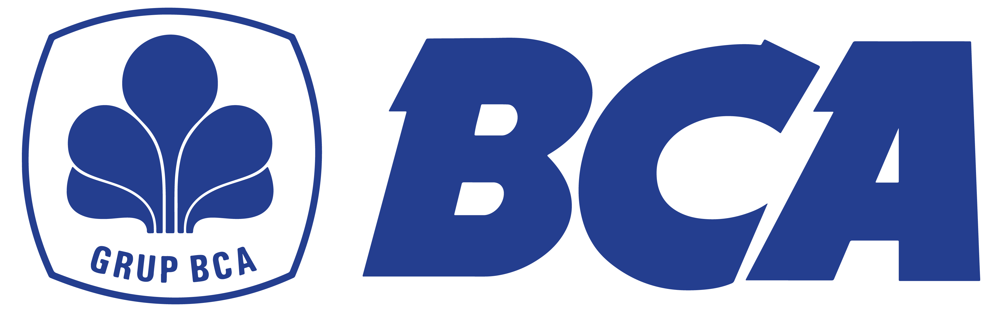
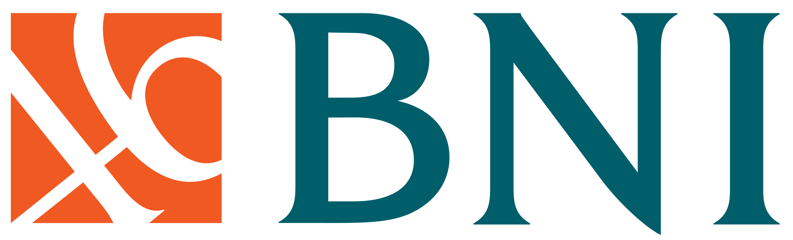
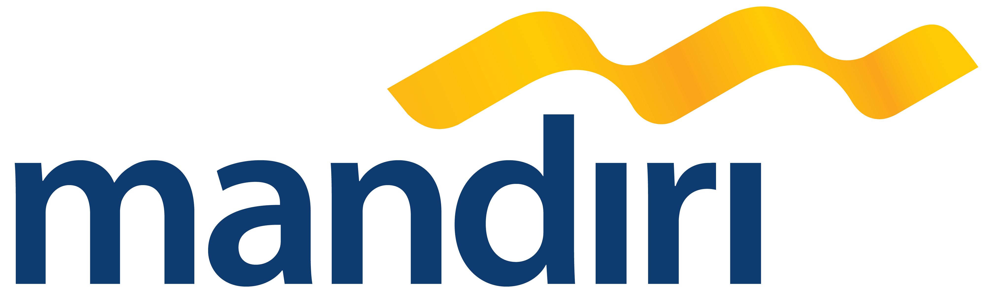
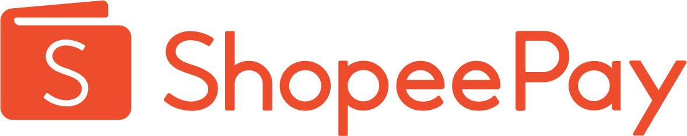

Produk lebih mudah dipelajari
Susun foto, deskripsi, kategori, dan harga agar pelanggan dapat membandingkan pilihan di satu tempat.
Rasio Store
Susun produk, keranjang, checkout, dan pengelolaan pesanan dalam satu website. Rasio membantu menyiapkan toko sesuai cakupan layanan.
Untuk bisnis produk yang membutuhkan katalog dan alur pembelian melalui toko online sendiri.
Belum ada template Store yang dapat dipilih.
Konsultasikan KebutuhanRp129.000/bulan
Untuk 48 bulan · total Rp6.192.000Susun foto, deskripsi, kategori, dan harga agar pelanggan dapat membandingkan pilihan di satu tempat.
Arahkan pengunjung dari media sosial dan promosi ke toko dengan identitas bisnis Anda.
Perbarui informasi produk melalui CMS dan kelola pesanan melalui alur toko yang disediakan.
Kelola kategori, harga, SKU, dan stok melalui CMS dalam cakupan standar toko.
Kirim foto, nama, harga, dan deskripsi. Rasio membantu menyiapkan produk awal untuk Anda tinjau.
Alur pembelian standar dengan pilihan pembayaran mengikuti penyedia dan aktivasi toko.
Kebutuhan teknis dasar toko termasuk selama langganan aktif, beserta CMS dan revisi minor.
Metode mengikuti penyedia dan aktivasi toko.




Membantu menjawab pertanyaan pengunjung berdasarkan informasi bisnis Anda.
Penerapan disesuaikan dengan kebutuhan; daftar ini bukan daftar template yang tersedia.
Susun koleksi dan informasi setiap produk.
Jelaskan kegunaan serta detail produk.
Tampilkan furnitur, dekorasi, dan perlengkapan.
Susun produk siap kirim dan informasi kemasan.
Tampilkan peralatan dan perlengkapan olahraga.
Perkenalkan karya, hadiah, dan produk artisan.
Pelanggan melihat informasi produk, menambahkan pilihan ke keranjang, lalu memeriksa pesanan melalui checkout.
Pilihan pembayaran dan pengiriman diperiksa sesuai kebutuhan serta penyedia yang digunakan.
Konsultasi GratisPenyesuaian konten template, pengelolaan produk, keranjang, checkout, dan pesanan mengikuti cakupan layanan. Bantuan input awal mencakup 20 produk.
Integrasi khusus, alur pembelian baru, dan perubahan struktur memerlukan pembahasan terpisah. Biaya payment gateway dan layanan pihak ketiga tidak termasuk.
Pastikan kebutuhan produk dan alur pembelian sesuai cakupan.
Periksa desain toko, durasi, dan total biaya.
Siapkan foto, nama, harga, dan informasi produk awal.
Periksa konten dan alur pembelian sebelum digunakan.
Harga per bulan untuk paket 12–48 bulan adalah ekuivalen. Total dibayar di muka untuk durasi yang dipilih.
Rp299.000/bulan
Total Rp299.000
untuk 1 bulan
Domain dibayar terpisah
Rp179.000/bulan
Total Rp2.148.000
untuk 12 bulan
Domain gratis tahun pertama
Rp149.000/bulan
Total Rp3.576.000
untuk 24 bulan
Domain gratis tahun pertama
Rp129.000/bulan
Total Rp6.192.000
untuk 48 bulan
Domain gratis tahun pertama
Hosting, SSL, 1 email bisnis, CMS, AI Chatbot, dan revisi minor termasuk sesuai cakupan layanan. Domain gratis tahun pertama untuk paket minimal 12 bulan; perpanjangan domain tahun berikutnya dibayar pelanggan.
Tidak ada batas jumlah produk dalam cakupan standar Rasio Store. Hal ini tidak berarti kapasitas teknis atau seluruh integrasi tanpa batas.
Bantuan awal mencakup 20 produk pertama. Siapkan foto, nama, harga, dan informasi setiap produk. Produk berikutnya dapat dikelola melalui CMS yang disediakan.
Rasio Labs mengenakan 0% biaya transaksi. Biaya payment gateway dan pihak ketiga tetap dibayar terpisah sesuai penyedia.
Metode pembayaran mengikuti penyedia serta aktivasi toko. Kebutuhan metode tertentu diperiksa sebelum disepakati.
Integrasi di luar cakupan standar dibahas dan ditawarkan terpisah. Revisi minor tidak mencakup penambahan fitur atau integrasi baru.
Harga perpanjangan, cara berhenti, serta ketentuan pengembalian dana dijelaskan sebelum Anda menyetujui pesanan.